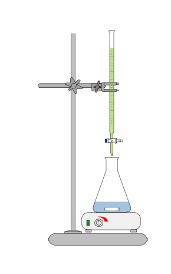

Titrering er en kjemisk analysemetode der en gradvis tilsetter en standardløsning i en prøve
til reaksjonen er fullstendig. Slik kan en finne konsentrasjonen av en prøveløsning.
For å lage en buffer bruker man syre-base-titrering fordi man skal finne omslagspunktet og måle pH-verdien.

I en syre-base-titrering kan man bestemme konsentrasjonen av en syre ved å tilsette en base med kjent konsentrasjon,
eller omvendt bestemme konsentrasjonen av en base ved å sette til en syre med kjent konsentrasjon. Ved slike syre-base-titreringer
skjer det en nøytralisjonsreaksjon der H3O+-ioner og OH--ioner reagerer og danner vannmolekyler i den kjemiske reaksjonen
H
3
O
+
(
a
q
)
+
O
H
−
(
a
q
)
→
2
H
2
O
(
l
)
Vanligvis bruker man en pH-indikator for å finne ut når blandingen er tilsatt lik
stoffmengde (mol) syre som det opprinnelig var base – eller omvendt.